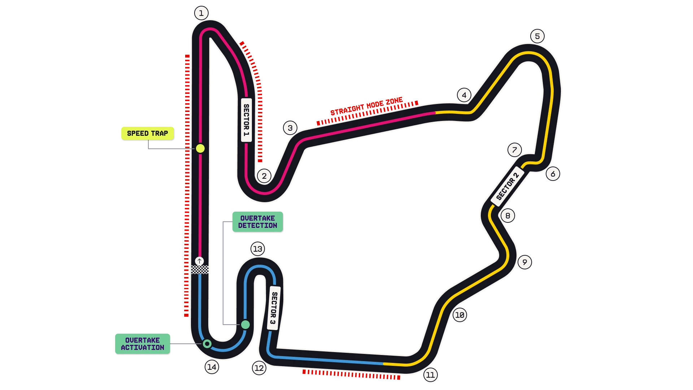

Hungaroring Circuit Guide
A tight, twisty 4.381 km 'kart track' on the outskirts of Budapest — one real straight, and one real overtaking spot.
Circuit history & Grand Prix editions
Pre-weekend record book: results before 2026-07-26. This event’s result is not included.
The 2026 event was the 41st World Championship Grand Prix at this venue and the 41st Hungarian Grand Prix across all venues.
First race here: 1986 Hungarian Grand Prix. Most recent before this weekend: 2025 Hungarian Grand Prix.
| Grand Prix name / series at this venue | Completed editions | Years |
|---|---|---|
| Hungarian Grand Prix | 40 | 1986, 1987, 1988, 1989, 1990, 1991, 1992, 1993, 1994, 1995, 1996, 1997, 1998, 1999, 2000, 2001, 2002, 2003, 2004, 2005, 2006, 2007, 2008, 2009, 2010, 2011, 2012, 2013, 2014, 2015, 2016, 2017, 2018, 2019, 2020, 2021, 2022, 2023, 2024, 2025 |
Most driver wins here
- Lewis Hamilton: 8 wins2007, 2009, 2012, 2013, 2016, 2018, 2019, 2020
Most constructor wins here
- McLaren: 13 wins1988, 1991, 1992, 1999, 2000, 2005, 2007, 2008, 2009, 2011, 2012, 2024, 2025
Overtaking at this circuit
Up to the ten most recent completed Grands Prix at this venue, before 2026-07-26. These are recorded on-track passes, not places gained between the grid and the finish.
Source coverage and freshness
Collection scope below is separate from this pre-weekend venue table. A source check is not a new race observation. Collected races on or after the selected weekend stay excluded from its history.
- RacingPass archive: archive; 33 sourced races, latest race 2024-11-24. Reviewed archive through 2024; not an ongoing current-season feed. Routine collection no longer polls the stale/blocked publisher. Community-counted on-track passes for position. Excludes lap one, pit-stop gains, passes of cars off track/spun or with major reliability problems, and lapping/unlapping. No separate DRS breakdown is provided here. Last successful collection: 2026-09-19T10:01:17+00:00.
- Official F1 Fantasy scoring overtakes: automatic; 14 sourced races, latest race 2026-09-13. F1 Fantasy-defined legal on-track passes, excluding a passed car entering/in the pit lane, suffering car failure or going unreasonably slowly. The rules do not promise to exclude lap one. Race scoring events only, not positions gained or Sprint points; not comparable with lap-one-excluded community counts. Last successful collection: 2026-09-19T10:01:17+00:00.
- Sundaram R / @f1statsguru - 2025: reviewed-static; 24 sourced races, latest race 2025-12-07. Static 2025 chart, visually reviewed; future charts require a new review. Publisher's pure overtakes: excludes opening-lap gains, crashes, mechanical failures and pit stops. Treatment of team orders and lapping is not established; do not merge with RacingPass or Fantasy counts. Last successful collection: 2026-09-19T10:01:17+00:00.
Sundaram R / @f1statsguru - 2025
Publisher's pure overtakes: excludes opening-lap gains, crashes, mechanical failures and pit stops. Treatment of team orders and lapping is not established; do not merge with RacingPass or Fantasy counts.
| Previous edition | On-track overtakes | Coverage / source |
|---|---|---|
| 2025 Hungarian Grand Prix | 36 | Sundaram R / @f1statsguru - 2025 |
| 2024 Hungarian Grand Prix | Not covered | No count in this source |
| 2023 Hungarian Grand Prix | Not covered | No count in this source |
| 2022 Hungarian Grand Prix | Not covered | No count in this source |
| 2021 Hungarian Grand Prix | Not covered | No count in this source |
| 2020 Hungarian Grand Prix | Not covered | No count in this source |
| 2019 Hungarian Grand Prix | Not covered | No count in this source |
| 2018 Hungarian Grand Prix | Not covered | No count in this source |
| 2017 Hungarian Grand Prix | Not covered | No count in this source |
| 2016 Hungarian Grand Prix | Not covered | No count in this source |
Factual totals visually reviewed from Sundaram R (@f1statsguru), published 24 December 2025. Independent statistics, not official FIA data. No underlying pass ledger or open redistribution license was established. Source artwork is linked, not republished. Source and counting rules · Original reviewed chart.
RacingPass archive
Community-counted on-track passes for position. Excludes lap one, pit-stop gains, passes of cars off track/spun or with major reliability problems, and lapping/unlapping. No separate DRS breakdown is provided here.
| Previous edition | On-track overtakes | Coverage / source |
|---|---|---|
| 2025 Hungarian Grand Prix | Not covered | No count in this source |
| 2024 Hungarian Grand Prix | 33 | RacingPass archive |
| 2023 Hungarian Grand Prix | 16 | RacingPass archive |
| 2022 Hungarian Grand Prix | 61 | RacingPass archive |
| 2021 Hungarian Grand Prix | 17 | RacingPass archive |
| 2020 Hungarian Grand Prix | Not covered | No count in this source |
| 2019 Hungarian Grand Prix | Not covered | No count in this source |
| 2018 Hungarian Grand Prix | Not covered | No count in this source |
| 2017 Hungarian Grand Prix | Not covered | No count in this source |
| 2016 Hungarian Grand Prix | Not covered | No count in this source |
Race-total statistics reported by RacingPass; not official FIA statistics. Article prose and individual pass logs are not reproduced. Source and counting rules.
Each source uses its own stated counting rules; different definitions are not combined into one average. Circuit layouts, regulations, DRS, weather and shortened races can change passing totals. This sample is context, not a forecast of overtaking or a rating of race quality. Sprints and this weekend’s race are excluded.
Overtaking collection last attempted 2026-09-19T10:01:17+00:00.
Race results and venue identities derived from F1DB v2026.14.0 · CC BY 4.0. World Championship Grands Prix before 2026-07-26; this weekend and sprints excluded. Venue totals combine all F1DB layouts of this circuit. GP editions follow F1DB identities: some renamed titles share one historical series. These are pre-weekend records, not live all-time totals. Source last checked 2026-09-19T15:41:24+00:00.
FIA official maps & race-director notes
Official source; curated transcription may await review. Linked PDFs are the authority. Discovery does not extract or verify numeric values, and does not replace the curated material below.
Automatic discovery has not yet been recorded. This does not mean the FIA has not published documents.
Circuit map

Straight Mode Zones (2026)
- No more DRS in 2026 — cars use Straight Mode (low-drag active aero) in designated zones.
- Zone 1 — the pit straight into Turn 1 (main overtaking chance).
- Zone 2 — the run between Turn 3 and Turn 4.
- A third dashed stretch runs along the Turn 11–12 flat-out section.
Overtake system & speed trap
- Overtake Detection sits just after Turn 13.
- Overtake Activation is on the exit of Turn 14 onto the main straight.
- The speed trap is on the pit straight — watch top-speed deltas there.
- Overtake energy (extra deployment) is the 2026 equivalent of the old push-to-pass.
2026 track changes (FIA)
- Asphalt repairs approaching Turn 1 and Turn 12.
- TSP 15 moved to 10 m from the S2 line.
- New TSP 16 at 100 m from Turn 12.
Lap-by-lap, sector by sector
Jolyon Palmer's walkthrough
Sector 1 — "Basically two corners: a big braking zone at Turn 1, a relatively straightforward right-hander but quite bumpy in the braking area, so it can induce front locking, before Turn 2 which is slightly downhill."
Sector 2 — "One of those sectors where you've got to find a rhythm because out of pretty much every corner you need to be positioned for the next. You go from Turn 4 into 6, get a tiny breather, then it carries you through the sweeping section, building speed all the way."
Sector 3 — "Sometimes the tyres start to overheat and you scramble for grip. In the race you've got to set up your overtake coming out of Turn 14 — that's your one chance into Turn 1, and if not, into Turn 2. If you don't get it done there, you're probably following for the next lap."
It's not easy to overtake in Hungary, but you can. Turn 2 lends itself to it — you can go inside or outside, so it can be hard to defend.
Where the overtakes happen
- Turn 1 — the main passing chance at the end of the start-finish straight (476 m from pole to the braking point), aided by Straight Mode + overtake energy.
- Turn 2 — the secondary move; inside or outside line makes it hard to defend.
- Track position is king — expect close-running trains if the leaders bunch up.
Character & challenges
- 180° corners and constant direction changes — compared to a kart track.
- Bumpy braking zone into T1 can trigger front locking.
- Grip levels among the lowest of the season; big track evolution across the weekend as rubber goes down.
- Rear axle works hard on traction — key for tyre deg.
FIA Race Control notes worth knowing
- Track limits: failing to negotiate the exit of Turn 14 during any timed session invalidates that lap and the next.
- Lapping: blue-flag pre-warning at 3.0 s; blue panels/lights when the faster car is within 1.2 s — slower car must yield at the first opportunity.
- Practice starts allowed on the right-hand side of the pit-exit road; after FP2 a car may complete two extra laps to practise starts on the grid.
- Safety Car restart resumption point: SC leaves the pits 1 min before the resumption and waits for the field after Turn 7.
Source: FIA Race Director's Competition Notes (2026 Hungarian GP).